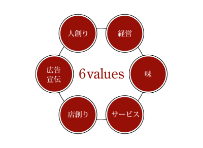
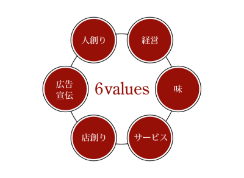

通信販売
通信販売


ご挨拶
1987年名古屋市中区栄に第一号である「栄店」がオープンしたのが若鯱家のスタートでした。
目まぐるしく様変わりを遂げている社会において、生き残ることがまさに厳しいこの飲食業界で、
'名物カレーうどん'という看板商品と共に歩んでくることが出来たのは、
弊社の商品を愛していただいたお客様のおかげであると常に感謝しております。
より多くのお客様に満足いただける若鯱家を目指して取り組んできた中で、
'名物カレーうどん'だけでは絶対に譲れないこだわりを創業当時より貫いてきたつもりです。
時代の嗜好の変化の中で、これからも'安心できる、変わらない味'をご提供し、
'美味しさと新しさを追求した中から生まれる、変わり続け行く味'に是非ご期待ください。
創業当時から貫いてきた
譲れないこだわり
想いは名古屋から世界へ
カレーうどんが世界共通語に
1980年代後半に、スタイリッシュな美食空間で世間の注目を集めスタートした若鯱家は、
それから現在に至るまでお客様の嗜好を常に先読みし、より新しい提案を重ねながら,
都心部から郊外の大型ショッピングセンターにも進出してきました。
特に家族全員が楽しく食事いただける場所をコンセプトに店づくりを心がけた結果、
お客様のご支持を得ることができました。そして、若鯱家の次なる挑戦は世界進出です。
テストマーケティングとして中部国際空港に出店したところ、予想を上回る反響をいただき、
「カレーうどんのおいしさを世界中の人々にお届けしたい」という想いは膨らむばかり。
おいしいものに国境はありません。若鯱家のカレーうどんが海を渡り、その他の国々でも
愛される日はそう遠くないかもしれません。
若鯱家は、夢やろまんに挑む気持ちをパワーに変えて、これからも進化・拡大させ続けてきます。

代表取締役 高橋知子
経営理念
社堤
お客様第一主義
私たちの使命はお客様にご満足頂ける接客サービスと料理を提供する事。
顧客満足を追求する真摯な姿勢が、知恵と創意に満ちたアイディアを
生み続けているのです。だから、私たちの行動・判断基準はお客様にとって
喜んでもらえる事なのか？そして正しい事なのか？です。
言葉にするのはシンプルですが、実行するのは簡単ではありません。
私たちは100%の答えがないこの問題と常に向き合い試行錯誤と努力を重ねています。
顧客満足を追求する真摯な姿勢が、知恵と創意に満ちたアイディアを
生み続けているのです。
経営理念
私たちは共存共栄の精神と感謝の心を常に持ち、
食文化を通じてお客様に感動と喜びを提供します。
 

会社概要
沿革
組織図
名古屋で生まれ、東海三県、関東へと店舗展開するグループ企業へと成長しました。
若鯱家では、社員すべてがのびのびと自由に発想し、やる気と情熱を持って仕事に打ち込めるよう、積極的に経営にかかわる仕事をお任せします。
お客様や働く仲間の笑顔に囲まれ「自分はこの店の経営者である」とビジネスの醍醐味を存分に味わうことができるでしょう。
立地は尾形ショッピングセンター内が半数以上を占めますが、観光やショッピングで賑わう路面店も数多くあります。

若鯱家が取り組むSDGs
若鯱家では持続可能な社会づくりに貢献するため、
SDGs経営に取り組んでいます。
＜SDGsとは＞
「Sustainable Development Goals（持続可能な開発目標）」の略称。2015年9月にニューヨーク国連本部において採択された、持続可能な社会づくりのため、発展途上国のみならず先進国自身が取り組むユニバーサル（普遍的）な目標であり、17の目標と169のターゲットで構成されています。
経営理念と密接につながるSDGs
若鯱家では創業より、環境や社会問題の解決につながる取り組みを進めてきました。現在は、自社のこれまでのCSR活動をSDGsの目標に照らし合わせ、より具体的な取り組みへと進化させています。
当社の経営理念にも掲げている「共存共栄の精神」は、まさにSDGsの基軸と言えます。 6values（人創り、経営、味、サービス、店創り、広告・宣伝）のすべてが持続可能な社会づくりと密接にかかわるなかで、もっとも重要であると考えるのが、「人創り」と「パートナーシップ」です。
分け隔てない雇用と自己表現の機会を
企業は人なり──この言葉は当社にもあてはまります。若鯱家を支え、同じ夢に突き進む同士に、年齢や性別、学歴による障がいは一切ありません。
その想いは、外国人雇用や障がい者雇用についても同じ。すべての方に雇用と自己実現の機会を与え、同士となり、家族になっていただきます。
⼈の不平等の解消は、雇用だけでは終わりません。当社では独自の社内研修「麺道場」により、すべてのスタッフが「心・技・体」を高めながら、「うまい」を身体で覚えていきます。現在も、外国籍のスタッフや障がいをもつスタッフが、カレーうどんをつくる重要な仕事に従事。若鯱家の原点である「味」を大切に守っています。
若者に業界のやりがいと多様な働き方を伝える
飲食業界では慢性的な人手不足が課題です。少子高齢社会も要因ですが、次世代を担う若者に、飲食業界の姿や未来像を提示できていない点も理由だと考えます。
若鯱家では中・高・大学生のインターンシップを定期的に実施することで、飲食業界のやりがいを感じていただく機会を提供しています。
また地元の大学と連携して、商品開発のプロセスを学びながら単位認定を行うカリキュラムを構築。大学生に、調理や接客とは異なる仕事や働き方を知っていただき、飲食業界の多様性や可能性を伝えることで、業界全体の活性化につなげる取り組みをしています
フードロスの削減は食に携わる企業の使命
日本では、年間で約612万トン（東京ドーム約5杯分）の食品が廃棄されています（環境省：我が国の食品廃棄物等及び食品ロスの発生量の推計値＜平成29年度＞）。フードロスへの対応は、当社も重要な課題と位置づけ。創業より「川上」である食材と、「川下」である商品の両側から、フードロスの削減に取り組んでいます。「川上」においては、適切な量の食材調達にはじまり、同一食材を複数のメニューに活用することで、無駄なく使い切るよう開発段階から徹底。調理や洗浄などに欠かせない水も、店舗ごとに使用量の基準値を設定し、節水に努めています。 麺の生成過程でできる「うどんの端材」は、お客様に提供することができません。当社でも廃棄せざるを得ない状況でしたが、名古屋の老舗菓子メーカー「桂新堂」様との協業により解消。桂新堂から出る「甘えびの頭」と、若鯱家から出る「うどんの端材」を組み合わせた「サステナブルえびせんべい」を開発し、フードロスの削減につなげながら新たな付加価値を生むビジネスモデルを作り出しました。この取り組みにより、生麺のロスはゼロに。サステナブルな商品開発は今後も継続していきます。
一丸となって地球環境の保護に貢献
当社では社内書類のデータ化、業務のクラウドワークス化を進めることで、紙の使用量を大きく減らしています。 また、店舗で使用する箸は樹脂箸を採用し、貴重な森林資源の保護にも努めています。さらに新店の開業や既存店の改築時に、照明のLED化を実施。無駄な電力消費をなくし、良質なエネルギーが安く、多くの人の手に届く未来に貢献しています。
若鯱家では常に自社のSDGsの見直しを行いながら、改善を重ねています。SDGsが決して特別なものでなく、当たり前の存在となるよう、引き続き従業員が一丸となってチャレンジを進めていくとともに、ステークホルダーへの浸透も図ることで、業界全体の底上げにも貢献していきます。